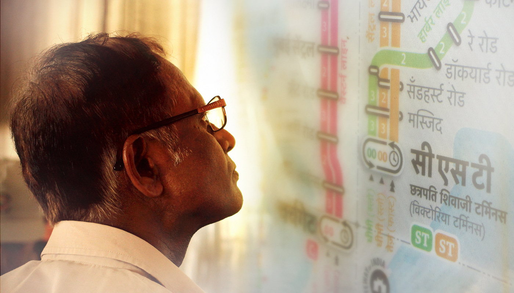
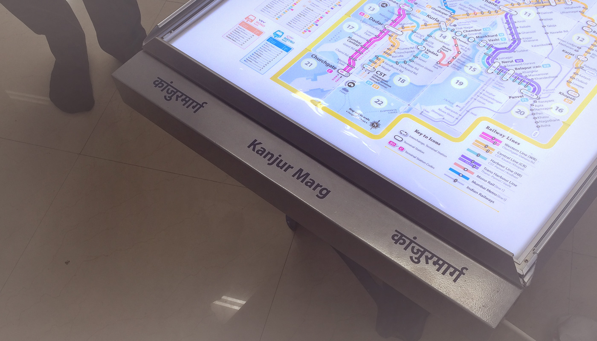
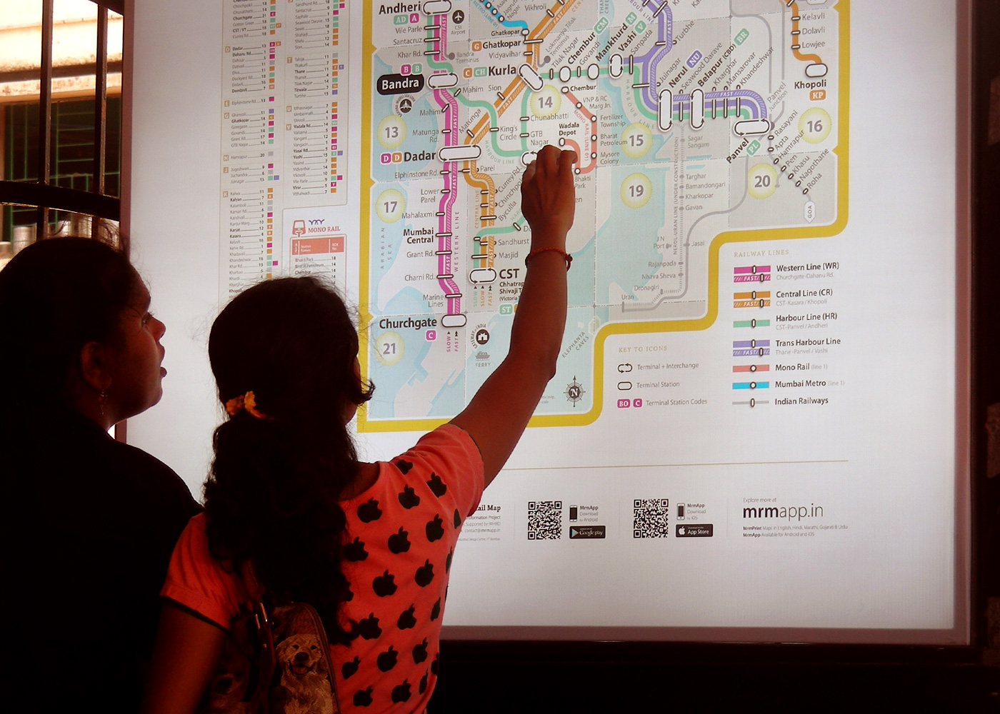

Mumbai Rail Map // Supported by: Ministry of human resource and development, Govt. of India / Explore more at: www.localsofmumbai.com
Design of the Mumbai Suburban Rail Map
मुंबई रेल नक्शा . ممبئی ریل کا نقشہ . मुंबई रेल नकाशा . મુંબઈ રેલ નક્શો
Since the first Mumbai Rail Map launch in December 2013, the project has grown due to the perseverance of a motivated team, and the encouragement and feedback from the people of Mumbai. After completing the Version 5 of the Mumbai Rail map, it was tested at Dadar and CST Railways stations with commuters.
The latest version of the MRM are available for download in Hindi, Marathi, Gujarati, Urdu & English languages. Download the latest maps at localsofmumbai.com

December 1st 2013
The begining of the project
Need for public information system in Mumbai
Visual Maps: Maps are visual representation of information of real or imagined spaces. A map can show the relationship of a particular area with another according to its physical spatial location, direction, distance, size, time, numeric data or other. Maps can be accurate
or distorted, exposing political, economic or any other agenda.
Inform Form,
Information Design: in theory an informed practice 1 2012
Published by Mwm creative pg 30
Maps are excellent in clarifying the mental model* of novice commuters who are anxious about their travel. Once the mental model is clarified the use of a map reduces, unless a new information- need arises.** Therefore maps are products of infrequent use. Whenever there is a need it should be resolved by the map. If the map is not usable then people might prefer to ask someone. So design of the map must be user friendly and self-evident. Unless everybody (especially children) is taught to read maps at a national level, the anxiety towards map reading and accessing information will persist.
*A mental model is an explanation of someone’s thought process about how something works in the real world. (Source: Wikipedia) **A frequent traveller on the Central Line told us that one weekend he had to travel on Harbour Line to attend a function. We had given him a portable MRM Ver.4. He referred to the MRM because he was not aware of that particular station on the Harbour Line. So the statement, “frequent travellers will not need to refer to a map” is not true. Information should be handy whenever need arises.
Design of the Mumbai Suburban Rail Map
Design for People
Mumbai suburban rail is one of the busiest rapid transit systems in the world — operating more than 2000 train services and carrying more than 7 million passengers daily. Rail map plays a critical role in providing the travel related information to help commuters navigate and guide them towards informed decision making prior to the journey.
There was no well designed, user-friendly map for the people of Mumbai as well as tourists visiting Mumbai. It was assumed that people don’t require a map to navigate and people manage by asking other people. Nobody had an overview of how is the rail network laid out. A complete overview was necessary to clarify the mental model of the rail commuters. Therefore we thought of designing a map.
Most people argued with us saying, Indians rely on asking around for information, instead of referring to a map. But did we ever give them a map?
Everyone in the city seems to be very confident about the information needed to travel around. As they say that we can ask any one at any point of time whenever needed. In a way its a positive side when we consider the social interaction in a large city like Mumbai. People are considered to be very helpful when it comes to guiding someone on the journey. But the argument arises that the information which is most useful in a scenario like railway stations in Mumbai. Why is it invisible at first place. Moreover Mumbai is generally over loaded with happenings. The crowd is increasing so fast everyday and the need for information along with that. Whenever we travel, why we tend to reconfirm about travel information by asking multiple people the same question. At times we are also mislead by believing some of them. Only if we would have had the minimum information visible on the locations, it can be observed whether they are useful or not. It is public right to be informed about their travel. We have never been given information on the spot and neither anyone bothered that it was actually required. Still we believe that people are there to help every time, we do not require any information which is accessible and available.
if the life is so complex?
There are travellers in Mumbai who are so used to local journey as if they are just a part of it. Yet when they been asked for or need to go to a new place in a different train route which is not their frequent route, they become just like a novice traveller in the city. Even they need to ask. And it might be as scary as it is for a first time traveller in Mumbai. The complexity becomes much higher when the new comer can not communicate in the local language with people.
‘‘Some complexity is desirable. When things are too simple, they are also viewed as dull and uneventful. Psychologists have demonstrated that people prefer a middle level of complexity: too simple and we are bored, too complex and we are confused. More- over, the ideal level of complexity is a moving target, because the more expert we become at any subject, the more complexity we prefer. This holds true whether the subject is music or art, detective stories or historical novels, hobbies or movies.’’
‘‘When complexity is unavoidable, when it mirrors the complexity of the world or of the tasks that are being done, then it is excusable, understandable, and learn-able. But when things are complicated, when the complexity is the result of poor design with completely arbitrary steps, with no apparent reason, then the result is perplexing, confusing, and frustrating. Poor design leads to the emotional distress we have come to associate with modern technology. Good design can provide a desirable, pleasurable sense of empowerment.’’
‘‘When complexity is unavoidable, when it mirrors the complexity of the world or of the tasks that are being done, then it is excusable, understandable, and learn-able. But when things are complicated, when the complexity is the result of poor design with completely arbitrary steps, with no apparent reason, then the result is perplexing, confusing, and frustrating. Poor design leads to the emotional distress we have come to associate with modern technology. Good design can provide a desirable, pleasurable sense of empowerment.’’
Donald A. Norman (Living with Complexity)
There was no well designed, user-friendly map for the people of Mumbai as well as tourists visiting Mumbai. It was assumed that people don’t require a map to navigate and people manage by asking other people. Nobody had an overview of how is the rail network laid out. A complete overview was necessary to clarify the mental model of the rail commuters.
Therefore we thought of designing a map.
November 2013
Industrial design centre, IIT Bombay
A very first draft of the Mumbai Rail Map
We started working on the project as a group, myself along with Snehal Patil. We did the groundwork together. Afterwards we made two different versions of maps. We have shown iterations regarding how we went about it. In a way this technique seems to be more useful when it came to design decisions and arguments. Looking at the two completely different approaches for the same visual design problem, we could articulate many reasons why to include or eliminate certain visual elements. Arguing with and against us we finally proposed an ideal solution governed by functional prioirties.

1st iteration Designed by Jaikishan Patel

1st iteration Designed by Snehal Patil
There were many design decisions to be made. What all information must be on the map? Should there be station numbers or codes? Is the time between stations absolutely necessary? What is the most striking way of differentiating between the fast and slow lines? What kind of a grid must be adopted? Can an index or a legend be avoided? Also, what size should the map be in? All these decisions became discussions and deliberations, with the first version launched on 1st December, 2013.
This however,
was only the beginning.

1st version of the Mumbai Rail Map.
Launched through social media and published through various english and regional language news papers

A4 Map, folded into pocket size
May - June 2014
Dadar central and Mumbai Chhatrapati Shivaji Terminus
Testing on the site revealed various issues
Post completion of Version 5, and getting due permissions from Central Railway, the Mumbai Rail Map (MRM) was tested at Dadar and CST Railway stations to check comprehension difficulties in the map. The testing was done with the support of the Central Railway. Thanks to Mukesh Nigam-DRM CR, CPRO-Naraendra A. Patil, PRO-V Chandrashekar CR, GRPF and Railway Police. The Map was installed at foot over bridges on both the stations and the user testing was on 9 May–14 May, 2014.

A team of several students and research associates were present at both these locations. They interacted with the users, who were a mix of regular and novice commuters, and recorded their responses to several task based queries in order to evaluate the utility of the map. They were specifically trying to understand if the users could comprehend the visual clues and the other information while being able to spot their respective destination stations with ease. Time, of course, was of the essence here. Shorter the time taken to spot the stations, the more user friendly the map is. The testing helped us understand how people in India consume information, as many assumed notions that may work in other countries might not work in our culture. Apart from these, there were several valuable inputs given by the regular commuters.

60% of users understood and used the alphabetically ordered index without any external help to use the map
We assume that alphabetical order makes it easier to search for a station in the index and there would be no error. At times the pronunciations can be strange and funny. Two people came to the map, when asked to search for ‘Seawoods’ station they began searching under ‘C’ and said that they could not find it. Certain things seem beyond our control.
70% of users could find station code and route colour
One NIT graduate who camps and treks regularly, uses maps and has been to Mumbai a few times, wanted to go to Kurla from Dadar. He looked at the Map and figured out; to go to Kurla he will have to take a Kalyan train, he saw the station code K on the map and then on the railway indicator and found the desired train and platform number.
66% of users were able to find stations using the box number.
Typically an alpha-numeric criss-cross grid is used to search for a station on most international maps. We used a grid to reduce the scan area. But assigned numbers alone to grid divisions (boxes) as it was better understood in comparison to the alpha- numeric grid system that uses both X and Y axes. Eg. Person in the above picture could locate Ghatkopar by using the numeric grid.
People ignored the legend as they thought it was a part of the Map. They were confused between the Mono and Metro Rail. Most of the them said that time between stations as an useful feature.
Documentation of a few user feedback at the stations
January 2015
version 6 of the print map in 5 languages
When we arrived at a portable design solution.
Version 6.0 covers all the lines on the network including Mono and Metro lines.
It is designed to address the needs of the colour blind population.
It tells you the time between stations (Most commuters appreciated this feature)
Use of alphabetically ordered index makes it easier for the user to search a station quickly.
Commuters found it difficult to use the alpha-numeric grid used worldwide,
so we introduced the box grid.Improved visual differentiation between fast and slow train lines.

MRM Version 6.0
May 2015
Bandra and Dadar western
Installation of the You are here maps at Dadar and Bandra western railway stations
in 3 languages; Hindi, Marathi and English

MRM (Mumbai Rail Map) installed at Dadar (W) Railway Station, Booking window (Western Railway) in all three languages, English, Hindi and Marathi.
Special thanks to A.K. Srivastava- Chief operations Manager - (WR), Senior DCM, Bela Meena, (WR) and CMI, Ganesh Jadhav - Bandra (WR). We removed the (approx) time taken to travel between stations on the MRM maps installed at Bandra and Dadar. When it was decided that there would be a location change due to heritage building restrictions and the maps will have to be moved to the booking windows, a possibility arose that people standing to buy a ticket would have mis-interpreted the time between station as travel fares. It was assumed that it would be less likely that people would read the legend and figure out that the numbers on the lines are meant to show time and not fares. This would have created a huge confusion. Therefore the maps posted at stations have huge empty white space at prime station junctions, which looks odd when compared with earlier maps. We shall improve that in our future versions - MRM Team

Are people viewing the map? Were the Maps tampered?
A week after installing the maps at Bandra and Dadar. Nothing is tampered. Hriday Gami from Department of Design, IIT Guwahati narrates his experience talking to people when he tries to locate his route from Bandra to Kanjurmarg Railway station and how people help in presence of MRM.
People familiar with the Mumbai Railway Network preferred to guide me verbally than with reference to the map. At Dadar station, I asked one person for directions to KanjurMarg. He looked away from the map and told me to take the stairs in front of me, change the line to Central, get down at platform 1 or 2 and catch a slow train to Thane.

When I asked one person to guide me to Kanjurmarg station from Bandra Station, he was adamant I take the train bound towards Vashi on Harbour Line. Then I told him, and showed him on the map, that I was told Kanjurmarg is on Central Line. He saw the map, told me to take a train to bound to Vashi from Dadar, get off at Kurla and change trains. (Probably he orients himself with respect to Vashi station) There was an expert user of the local trains. He was looking at the map because he was waiting at the station for a call from his boss who would tell him where to go next. He knew where Kanjurmarg was and located it by following the line from CST northwards. I asked him whether the fast train will stop there, he was quick to point out the difference between the two lines, slow and fast and said that fast trains stop only at stations with longer dashes stretched across both the lines. The left line is for slow trains and right line is for fast trains. When I asked him, “what is that number 10 ( GRID) ?”, then he got a bit lost and said he doesn’t know. (Grid number was not understood)
There was an elderly couple at Dadar station who approached the map to find out if the column on the left was train timings. After realizing that they were not train timings they asked me if I knew. There was an electronic display of the train timings and platforms on the same wall, but lost in the gamut of advertisement posters. I informed them of the next train and they left to catch their train. (Perhaps points to a need for an integrated information system, a train timing and platform ticker along with the map)
Some people were looking at the map for shopping malls and places to eat. They asked me whether I knew any places around in Bandra. I replied in negative. Then they called someone who knew, he guided them to Dadar. They were looking at the map through their conversation to orient themselves and get an idea of distance and time. Two girls who were waiting near the ticket windows and had happened to browse the map were interested in looking for places they knew on the map.
Hriday Gami visiting railway stations to casually interact with different kinds of users and the way they read the map to extract information. People were asked to search for Bhivpuri road, railway station less likely to be known.
Hriday shares his experiences with us: I asked one of the users, a young man in his early twenties who was already looking at map, to guide me to Bhivpuri Road. He said he is new to the city, but asked me the name of my destination again. I told him, Bhivpuri Road, and strangely he shifted all his attention towards finding my station on the map. After scanning the map briefly two or three times he headed straight for the index. It seems he was new to the city, but not new to maps. He found Bhivpuri Road in the index and read the number 12 against it. He was quick to figure out that 12 was the box number as there were no other numbers displayed on the map. He pointed his finger to the map and said its the station before Karjat. (This user was new to the city, but probably not new to reading maps. He was quickly able to decipher how to draw information out of the map and the relationship between the different components of the map.)

In my interactions with another user, I asked the same question, “where is Bhivpuri Road and how do I get there?”. He was reluctant to answer at first. He said he is not familiar with the railways. Even then, he scanned over the map twice for Bhivpuri Road, though unsuccessfully. Surprisingly he told me to look for Bhivpuri Road in the index, as surely if its a station it will be listed. I found the station and told him that it says number twelve next to it and has an orange box. He managed to figure out that the number indicated a box number on the map and was quick to point out the location of Bhivpuri Road. (The user, who was a resident of Bandra East, was not new to the city, but probably new to maps, yet he was able to figure that I will find my station in the list of stations.
I observed a man, maybe in his forties, tracing train routes with an envelope in his hand and looking intently at the map. I approached him for directions to Bhivpuri Road. He knew exactly where the station was and pointed it out on the map. He said I’ll have to take a train to Dadar, change to central line and take a fast train to either Karjat or Khopoli. This person is a resident of Mumbai and is extremely familiar with the rail network. I asked him where he was going, and he replied said he was waiting for someone at the station. (Why was he looking at the map? Was it to update himself about the network? Was he trying to revise his knowledge about the map?) After interacting with these users I decided to take this a little forward and find out how difficult it is to teach a user to read the map.

I asked another person where Bhivpuri Road was and how can I get there from Bandra Station. He started looking for it on the map, I slowly guided him towards the index and asked him if it could be here. He immediately started searching for it alphabetically (Hindi Map), and found it under ‘Bha’. Then he wondered if the number against Bhivpuri Road was the distance from Bandra but was quick to correct himself on that thought. This time I asked him what the number was and he was able to know that the number stood for the box. He located box number 12, then Karjat and then Bhivpuri Road next to it. Then of course, he guided me through the journey saying I’ll have to take a train to Dadar, change lines and take the Karjat train.
Another observation was that at Dadar station, people standing in queue for the tickets tend to observe the map and if they are with someone they strike a conversation about their journey.
People will learn, let them get familiar. If it is useful they will use it. Two weeks after installation, no tampering, no vandalism. Everything intact. - MRM Team
Explore more at www.localsofmumbai.com
Please Like and Share the Facebook Page #LocalsOfMumbai for updates
- Related Projects
 MrmApp
MrmAppiOS . Android
 My Mumbai My Local
My Mumbai My Local#LoveMumbai
{kind=link}